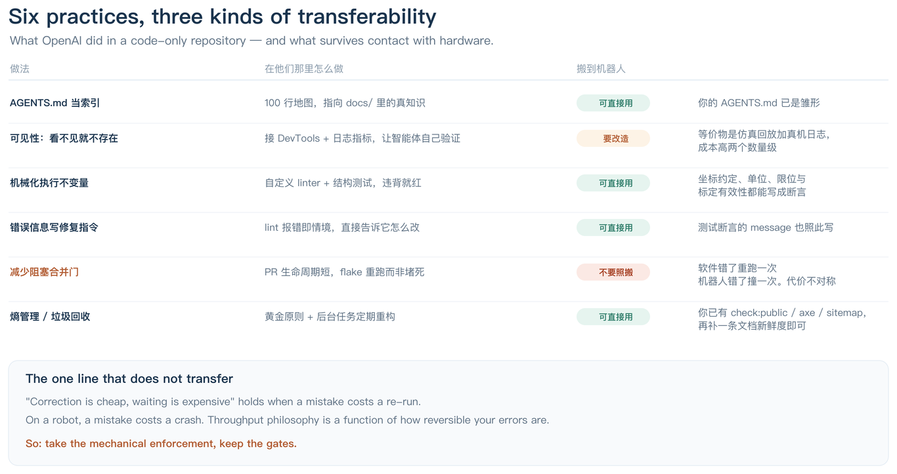

NOTE 28 / 工程 · 智能体协作
Harness 工程
OpenAI 用五个月、三个工程师、零手写代码做出了一百万行。真正值得学的不是速度，是他们把纪律放在了哪里。
这是对 OpenAI 那篇 Harness engineering 的整理与评注。前半是他们的做法，后半是我认为该保留、该改造、该扔掉的部分。
边界。原文是一个五个月的产品实验，不是长期维护的老系统。文中所有数字都出自原文；我的判断部分会单独标出来。
1. 实验本身
| 项 | 数字 |
|---|---|
| 起点 | 一个空 git 仓库（2025 年 8 月首次提交） |
| 时长 / 产出 | 五个月 / 约 100 万行 |
| PR | 约 1500 个，全部合并 |
| 团队 | 3 人起，后扩到 7 人（吞吐量反而上升） |
| 手写代码 | 零行 |
| 相对传统方式 | 约 1/10 的时间 |
连第一份指导智能体的 AGENTS.md 本身都是 Codex 写的。人类只做两件事：掌舵，和验收。
2. 角色变了：从写代码到造环境
原文里最关键的一句不是数字，是这个：
不顺利时，解决方案不再是「再努力一点」，而是「还缺什么能力，怎么让它对智能体清晰可读且可强制执行」
也就是说，每一次失败都被翻译成一条环境改进，而不是一次人工补救。这是全篇的枢纽——后面六条做法都是这条原则的展开。
3. 仓库即记录系统：给地图，不给手册
他们先试了「一个巨大的 AGENTS.md」，失败了。四条理由写得很准确：
| 失败原因 | 含义 |
|---|---|
| 情境是稀缺资源 | 大文件会挤掉任务、代码和文档本身 |
| 过多指导反而无效 | 什么都重要 = 什么都不重要，智能体退化成模式匹配 |
| 会立刻腐烂 | 没人维护的手册变成陈旧规则的坟场 |
| 无法机械检查 | 单个 blob 没法验证覆盖率、新鲜度、交叉链接 |
改法：AGENTS.md 压到约 100 行，只当内容目录，指向 docs/ 里真正的知识库。他们把这叫渐进式披露——从小而稳定的入口进去，再被指引到深处。
4. 可读性：看不见的就不存在
原文说得极直白：
智能体运行时访问不到的东西，对它来说就是不存在
所以那句让团队在架构上达成一致的 Slack 讨论，如果没进仓库，智能体就像三个月后入职的新人一样一无所知。
他们为此把整个应用做成可被程序验证的：每个改动能起一个独立实例、接 Chrome DevTools 协议、用一个临时的本地可观测性栈（日志 / 指标 / 追踪），智能体自己复现 bug、改、重启、再验证——单次运行常常超过六小时。
5. 机械化执行：管不变量，不管实现
这是我认为最值得抄的一条：通过强制执行不变量，而不是微观管理实施过程。
他们的边界规则是：每个业务域内部只能单向依赖固定层，横切关注点只能走唯一入口。
执行方式是自定义 linter + 结构测试——而这些 linter 本身也是 Codex 写的。有意思的是他们只规定「在边界处解析数据形状」，不规定用哪个库。
还有一个细节值得单独拎出来：自定义 lint 的错误信息会直接写入修复指令，因为错误信息本身就是智能体的情境。
6. 吞吐量改变了合并理念
他们大幅减少了阻塞式的合并门：PR 生命周期短，偶发失败的测试靠重跑解决，而不是无限期堵住。
理由是成本判断：纠错成本低，等待成本高。
但他们也写了那句必须一起读的话：在低吞吐量环境中，这样做是不负责任的。
7. 为什么「注意力」是真瓶颈
把这句话算一遍就清楚了。设每天有 N 个 PR、每个需要 m 分钟人工审查、团队 P 人、每人每天能拿出 H 分钟：
拖一下就知道，同一个做法在两种规模下的结论完全相反。
你的团队还剩多少审查工时
默认是原文的量级：3.5 PR/人/天 × 7 人 ≈ 24.5 个 PR，每人每天两小时审查。把 PR 数拉到 60 看会发生什么。
- 需要
- —
- 可用
- —
- 缺口
- —
- 按此负载需要
- —
—
这就是为什么第 6 条不是「偷懒」而是「必要条件」：当审查需求超过人力上限，PR 必然积压，而积压的代价比放过一个小错误更高。
反过来也成立——如果审查工时还有富余，你完全有底气坚持严格门禁。同一套哲学，换个规模就是错的。
8. 熵与垃圾回收
智能体会复制仓库里已有的模式，包括坏模式。最初他们每周五花 20% 的时间人工清理「AI 残渣」，不可扩展。
改法：把「黄金原则」编码进仓库，再加一组后台任务定期扫描偏差、发重构 PR，多数一分钟内可审、自动合并。
原文的比喻很准：技术债务像高息贷款，不断小额偿还比攒着一次性解决便宜得多。
9. 三个反直觉的判断
①「枯燥」的技术对智能体更友好。原文说，那些可组合性强、API 稳定、在训练集里见得多的技术，反而更容易被建模。
② 有时宁可自己重写，也不要绕不透明上游。他们没引入通用的并发限流包，而是自己写了一个与遥测深度集成、测试全覆盖的版本——因为「绕过不透明的上游行为」比「重写一个子集」更贵。
③ 人类品味必须被编码。审查评论、重构 PR、用户 bug 会被记录成文档更新，或直接变成工具规则。原文一句话：当文档不够完善时，把规则转化为代码。
10. 搬到机器人：五条能用，一条要砍

能直接用的：AGENTS.md 当索引、机械化执行不变量、错误信息写修复指令、熵管理。这几条的共同点是只依赖仓库内的东西，不需要接物理世界。
要改造的：「看不见就不存在」在机器人里有个更硬的版本——物理世界本来就不在仓库里。软件可以起 worktree 点两下验证，机器人只能靠仿真回放加真机日志，成本高两个数量级。
要砍掉的：第 6 条「减少阻塞合并门」。
它成立的前提是错误可逆。软件 merge 错了，重跑一次；机器人 merge 错了，撞一次。这个代价不对称，所以「纠错便宜」这句话在物理世界里不成立。
我的建议是一句话：把机械化的部分用足，把吞吐量的部分收着用。
11. 这篇文章的边界
原文自己划了三条，值得原样记住：
① 强绑定这个仓库。原文明确写：这套行为取决于该仓库的具体结构和工具，不应假定它可以泛化。
② 长期架构连贯性未知。「在一个完全由智能体生成的系统中，架构连贯性会如何随时间演变，我们尚不清楚。」
③ 五个月的内部 beta。1500 个 PR 里，没有一个是「三年后要有人接手」的那种代码。长期维护成本还没被验证。
还有一条他们没直说、但我认为要标出来的：「智能体审智能体」的循环会收敛到共同盲区。人类评审的价值有相当一部分是「我说不清哪里不对，但这段不对劲」——这个信号在 agent-to-agent 的闭环里会消失。
12. 收尾
这篇文章真正的新意，不是「AI 能写代码」——那已经不新鲜了。新意是它给出了一个可操作的答案：
当执行变便宜时，瓶颈会自动转移到「定义正确」这件事上。而定义正确的方式，是把约束写成机器能检查的东西。
所以它表面在讲智能体，实际在讲一件更老的事：纪律要放在支撑结构里，而不是放在人的自觉里。这句话在没有智能体的年代就成立，只是以前没人有动力去做。
原文：Harness engineering: leveraging Codex in an agent-first world（Ryan Lopopolo，2026-02-11）
相关笔记：HarnessVLN：证据闭环 · Astra × G2 自主导航 · Astra 真机准入复盘